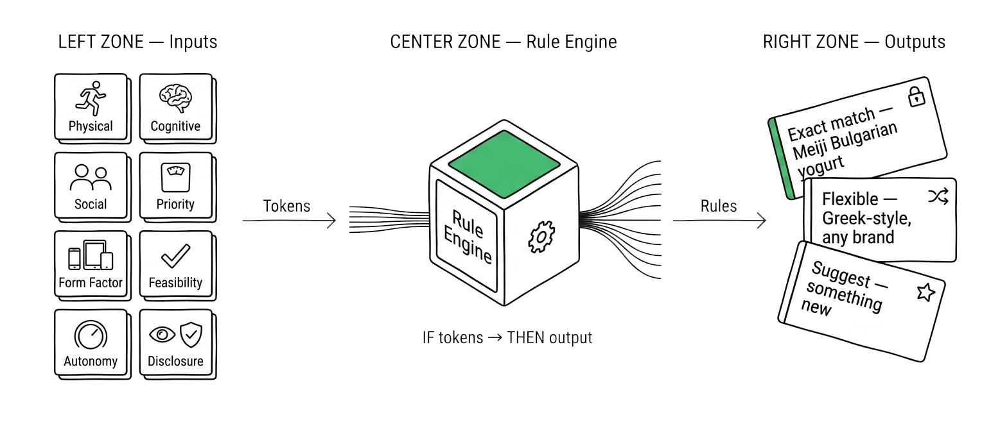

Context Grammar — Floor 4
Rule Engine
Tokens go in. Design rules come out. The if/then logic layer that transforms human context into concrete AI behavior.

Context Grammar — Floor 4
Tokens go in. Design rules come out. The if/then logic layer that transforms human context into concrete AI behavior.
Position in the Stack
The Rule Engine is the bridge between vocabulary and behavior. It takes the 8 context tokens plus memory from the Brain, runs if/then logic, and produces concrete design decisions for every interaction.
Rule Engine
The Rule Engine transforms the token/brain combination into concrete behavioral rules. If/then logic at scale, running silently on every interaction.

Rules in plain English
Rule 1: IF cognitive load is high AND social exposure is public → simplify the notification, delay non-urgent items
Rule 2: IF autonomy dial is at Confirm AND priority weight is low → suggest but don't act
Rule 3: IF form factor is watch AND physical state is walking → voice-only response, no visual clutter
if Physical State = driving
→
UI = audio only
if Social Exposure = boss_nearby
→
hide personal notifications
if Autonomy = Auto AND price < ¥500
→
purchase without confirmation
if Cognitive Load = high
→
reduce options to top 3
if Autonomy = Auto AND price > ¥15,000
→
always confirm (Dynamic Friction)
if Disclosure = hidden AND Autonomy > Confirm
→
constraint violation → reset Autonomy

The restaurant waiter's intuition — "this table needs minimal interruption," "the regular wants their usual," "check before suggesting the spicy dish" — expressed as computable if/then rules.
The Core Formula
Eight tokens. One engine. Infinite combinations. Here's how they connect.
The six Situation Tokens declare context. The two Dials set boundaries. The Brain provides memory. The Rule Engine takes all three and generates specific design decisions — what to show, when to interrupt, how much detail to include, which device to use.
No single token works alone. A rushing user (Physical State) with low cognitive bandwidth (Cognitive Load) at a business dinner (Social Exposure) on a watch (Form Factor) gets a fundamentally different experience than the same person, relaxed at home, on a TV. Same person. Same AI. Different grammar.
Implementation
The Rule Engine isn't just theory.
It's three YAML files and 33 Behavior Rules you can actually write.
What Comes Out
Every design rule the engine produces falls into one of three behavioral directions. The AX Pattern Library documents 23 named patterns across these three categories.
Rules are only as good as the memory behind them — and the specs that pin them down. Pick your next floor.